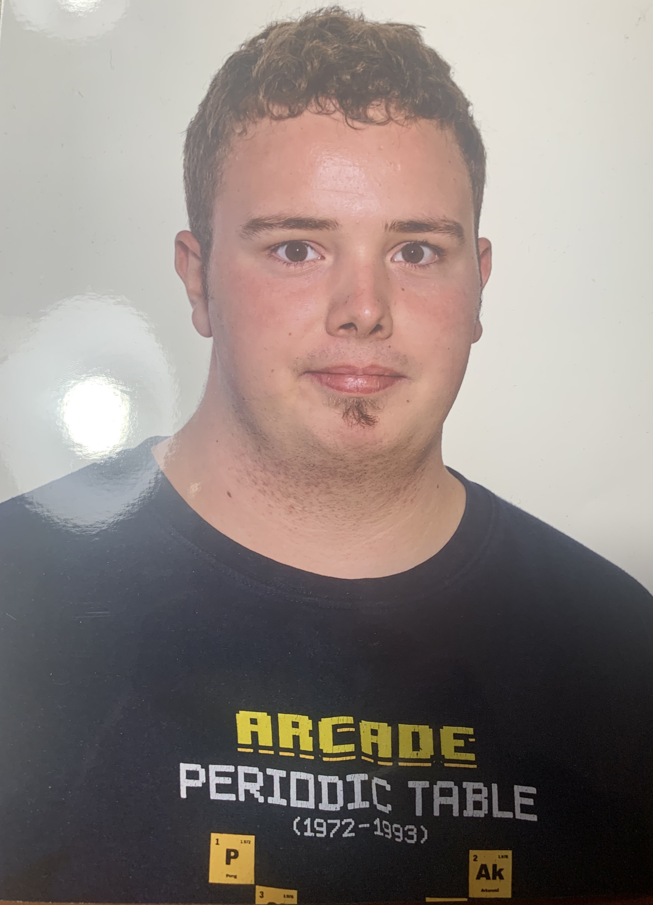

Bienvenido a la ONG Ecosystem:
En este proyecto contiene información en varios idiomas diferentes y una navegación para ir cambiando entre cada una de las diferentes páginas creadas dentro del proyecto para más información sobre la ONG.
El objetivo de la ONG:
El objetivo que tiene esta ONG es intentar promover el desarrollo sostenible y la cooperación a través de proyectos colaborativos, para que las comunidades, barrios, bloques de comunitarios, etc. Puedan entender de manera sostenible, igualitaria,etc; con los dispositivos tecnológicos, sistemas de gestión, de red, etc.
En el futuro, la ONG planea expandir su alcance e intentar llegar a más comunidades para promover el desarrollo sostenible, cooperativo, etc.
Fundador de la ONG:
